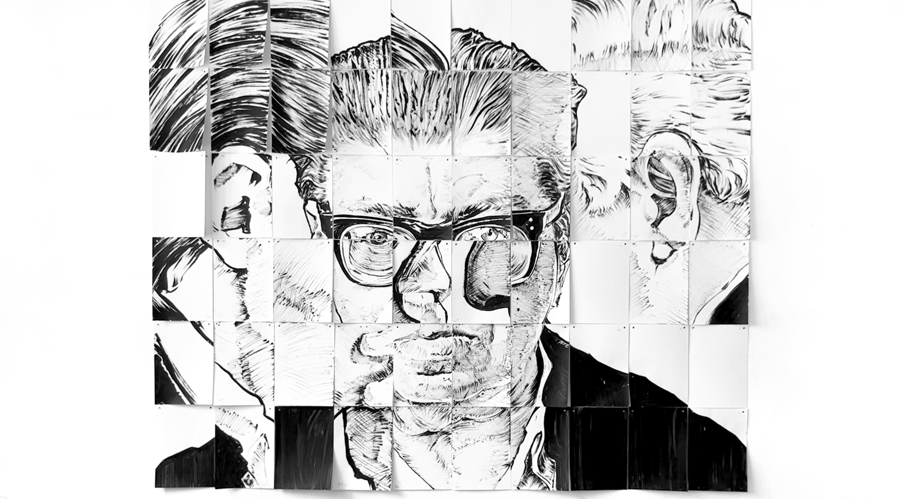
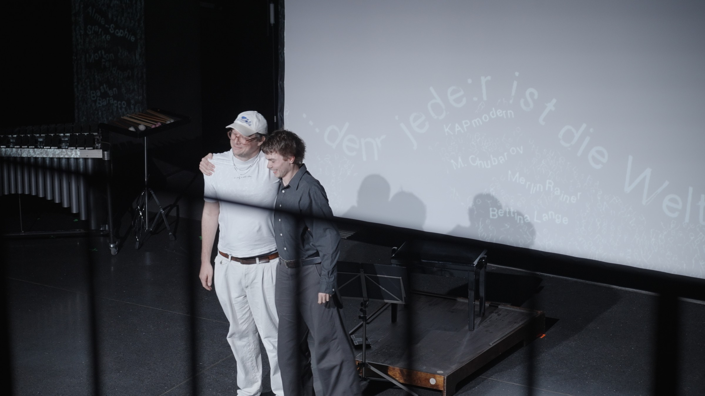

The painter Merlin Rainer and the concept artist Maxim M. Chubarov explore how a drawn world becomes a space for interactive storytelling.

Merlin Rainer's wall drawing for the Feldman scene: Morton Feldman looks out of the collage, between sheets of Philip Guston. Nikolaisaal Potsdam, 2026.
Works
Selected works, newest first. Open any image to see it large. All drawings, letters and frames of “… denn jeder ist die Welt” by Merlin Rainer, drawn by hand in pencil, graphite and ink.
2026
“… denn jeder ist die Welt”
Nikolaisaal Potsdam · 28 October 2026
An evening with the ensemble KAPmodern of the Kammerakademie Potsdam. Merlin's drawings tell the friendship of Morton Feldman and Philip Guston and react live to the music and to a cellist. In the interval the audience assembles the double portrait on the wall.
Concept
Merlin Rainer, Maxim M. Chubarov, Bettina Lange
Drawings and animation
Merlin Rainer
Dramaturgy, show system, mapping, light
Maxim M. Chubarov
Music
KAPmodern
Video and photo
Benjamin Weber
01 / 28
In the interval the audience assembled Merlin's double portrait of Feldman and Guston on the wall, sheet by sheet.
2024–2026
Upload DDR · UP-TEMPO POLITICS
GfZK Leipzig · Leipzig Light Festival
Merlin's drawn film, in which phone screenshots become graphite drawings, shown as a large projection in the city centre of Leipzig. Later published on MDR and in the ARD Mediathek. His film UP-TEMPO POLITICS was shown in the group exhibition “It's not about nothing. Episode 2” at GfZK Leipzig in 2026.
Painting, dance and music influencing each other live, developed with the collective WERT.
Concept
Maxim M. Chubarov, Merlin Rainer
Painting
Merlin Rainer
Dance
Denis Cvetkovic
Music
Hakim Azmi
With
Collective WERT
01 / 06
An interval in Potsdam
On 28 October 2026 we presented “… denn jeder ist die Welt” (“… for everyone is the world”) with the ensemble KAPmodern of the Kammerakademie Potsdam at the Nikolaisaal Potsdam, an evening we had developed for and with them. On every seat lay a quarter sheet, a fragment of one large drawing by Merlin, and on the wall hung a grid of squares marked with letters. In the interval people queued to bring their sheet to the matching square, and by the end of the break the wall showed a double portrait of the composer Morton Feldman and the painter Philip Guston, whose friendship the evening had told in drawings. We had not expected the queues. People had followed the story through the first half, and in the interval they put its picture together.
The question
One question runs through our work: how does a drawn world become a space for interactive storytelling? It leaves room for what we find in each place. We take in impressions, stories and themes on site, in conversation with hosts, dramaturgs, musicians, performers or collectives. The thread and the frame of the piece we set ourselves.
How we work together
Merlin Rainer is a painter who is developing towards animated film. He draws real people and places in pencil, graphite and ink. Maxim M. Chubarov shares the research and the dramaturgy with him and develops the technology that extends these drawings into a room: projection onto the architecture, light, sound, tracking, live control, or an installation that visitors walk through. The room always grows out of Merlin's drawn world. We research the material together and develop it with the people we meet on site, and in the end with the audience.

In Potsdam every image on the wall came from Merlin's hand. We developed the story of the evening together, and Maxim worked out how the drawings would respond during the concert. A camera followed the cellist, and Merlin's drawn measuring marks moved with her. His ink waves changed with the loudness of the music, picked up by microphones. The projection was mapped across the screen and the columns of the hall, and the lighting followed the running order. We built and ran this show system ourselves, using AI as a coding tool, and adapted it during rehearsals. These moments are where our question comes from.
Drawing gives us a lot of freedom. We can jump through time, place two biographies next to each other, explain what we have learned and let fantastic things happen. It also creates distance, and in our experience that distance gives people a way in, even to heavy subjects. With Feldman and Guston we chose to give an impression of their friendship and left many details out. Merlin's films show this too. In Upload DDR phone screenshots become graphite drawings. UP-TEMPO POLITICS draws the Hardtekk scene from real interviews with young people who are connected by the music while holding very different political views.
Whether the room is immersive or interactive, or mainly gives information, depends on the material. The audience should always find an easy way in, and usually gets something to do.
Where our method comes from
We met in the artist collective WERT (German for “value”), which Maxim founded and whose method he developed together with its members. For seven years the collective ran self-organised residencies, one week in one place, each year around one term that every member tested in their own field. Every year added one more step. Together the seven steps describe how artistic value is created collectively, from the first question to the presentation, and we still work along them:
What is value? (Was ist WERT?, 2020): deciding what deserves attention in a place, and for whom.
Resonance (Resonanz, 2021): turning towards each other, the place, its projects and its people. Out of this response we find the right material, images and techniques.
con:sens (with sense and with the senses, 2022): designing rooms from the material that make sense and appeal to the senses, and asking how technology can do both.
Synergy (Synergie, 2023): connecting people, crafts, media and techniques so that the whole becomes more than its parts.
Paradigm (Paradigma, 2024): finding the pattern in the material, the thread and the form of the story.
SHiFT (2025): changing the perspective, questioning the point of view and testing how the work is received.
Spectrum (Spektrum, 2026): opening the work up, showing and publishing it, built so that it can continue.
What comes next
“… denn jeder ist die Welt” is our current stage. There, our story was written around a music programme that was already set, the responsive moments were single scenes, and the setup was built for one hall. Next, we want interaction to be part of the story from the first day, with local partners who shape the material with us as co-authors, and a form that can be rebuilt in other theatres, halls and galleries.